▲ 순창 채계산 출렁다리. 촬영 시기는 자료에 없다 ⓒ 한국관광공사 · 공공누리 제3유형(변경금지)
"겨울에도 채계산 출렁다리 건널 수 있나? 바람 불면 막힌다던데, 몇 시까지 열지?" 이 글은 2026년 10월 19일 기준으로 순창군 관광 누리집과 한국관광공사 자료만으로 운영시간, 통제 가능성, 주차, 소요시간을 정리했다. 결론부터 말하면 다리는 11월 1일부터 2월 말까지 09:00~17:00로 한 시간 일찍 닫고, 바람이 심한 날의 구체적인 통제 수치는 공식 자료에서 찾지 못했다. 순창군 채계산 출렁다리 안내 바로가기
채계산 출렁다리 자체의 길이와 구조, 등산코스는 순창 채계산 출렁다리 270m 소개 기사에 있다. 이 기사는 같은 내용을 되풀이하지 않고 겨울철 운영과 확인하지 못한 항목, 인근 연계를 다룬다.
💡 먼저 결론
순창군 안내 기준 이용요금은 무료, 3~10월 09:00~18:00, 11~2월 09:00~17:00이다. 기상 상황(강설·강풍·강우·태풍 등)에 따라 운영시간이 바뀔 수 있다고 적혀 있고, 풍속 같은 숫자 기준은 없다. 계단과 등산로로 이뤄져 거동이 불편하면 이용이 어려울 수 있다는 안내도 있다.
1. 먼저 정리 — 이름 셋, 봉우리 둘, 숫자는 공식값만
한국관광공사 소개문은 채계산을 순창 적성면과 남원 대강면에 걸친 해발 342m의 산으로 설명한다. 회문산·강천산과 함께 순창의 3대 명산으로 꼽히고, 화산·적성산·책여산 등 여러 이름으로 불린다. 바위가 책을 쌓은 것처럼 보여 책여산, 비녀를 꽂은 여인이 누운 모습을 닮아 채계산이라는 설명이다.
출렁다리는 24번 국도를 사이에 두고 갈라진 적성 채계산과 동계 채계산을 잇는다. 같은 소개문이 적은 규모는 길이 270m, 높이 최고 75~90m다. 보도에서는 이보다 다른 길이(279m)나 사업비(62억·68억·89억 원)가 나오는데, 계획 단계 보도와 완공 뒤 보도가 섞인 것으로 보여 이 글은 한국관광공사 소개문의 270m와 75~90m만 쓴다. 대한민국 구석구석 바로가기
| 궁금한 점 | 확인한 내용 | 근거 |
|---|---|---|
| 길이·높이 | 길이 270m, 높이 최고 75~90m | 한국관광공사 |
| 개통 시기 | 2020년 3월 개통 후 코로나19로 임시 폐쇄, 한 달여 만에 재개(2020-05-06 보도) | 쿠키뉴스 |
| 산 높이 | 한국관광공사 소개문은 해발 342m. 다만 한국관광공사 제공 정상 표지석 사진에는 360m로 새겨져 표기가 다름 | 한국관광공사 소개문·사진 |
| 휴무일 | 연중무휴 | 한국관광공사 관광정보 |
| 이용요금 | 무료 | 순창군·한국관광공사 |
▲ 채계산 출렁다리 전경. 촬영 시기는 자료에 없다. ⓒ 한국관광공사 · 공공누리 제3유형(변경금지)
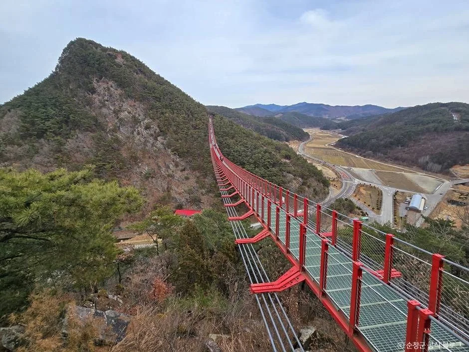
▲ 봉우리와 출렁다리가 함께 보이는 채계산 풍경. 촬영 시기는 자료에 없다. ⓒ 한국관광공사 · 공공누리 제3유형(변경금지)
2. 운영시간 — 11월 1일부터 한 시간 일찍 닫는다
순창군 관광 누리집은 3~10월 09:00~18:00(마감 30분 전 입장), 11~2월 09:00~17:00로 안내한다. 한국관광공사 정보도 하절기와 동절기를 같은 시각으로 구분하고 연중무휴라고 적었다. 오늘이 10월 19일이니 10월 31일까지는 하절기 시간표를 따른다. 마감 30분 전 입장은 순창군 페이지에서 3~10월 항목에 적힌 문구이고, 동절기에도 같은 규칙이 적용되는지는 표기가 없어 확인하지 못했다.
| 항목 | 내용 | 근거 |
|---|---|---|
| 하절기(3~10월) | 09:00~18:00, 마감 30분 전 입장 | 순창군 관광 |
| 동절기(11~2월) | 09:00~17:00. 마감 전 입장 규정은 표기 없음 | 순창군 관광 |
| 운영 변경 | 기상 상황(강설·강풍·강우·태풍 등)에 따라 변경될 수 있음 | 순창군 관광 |
| 휴무 | 연중무휴 | 한국관광공사 |
| 이용요금 | 무료 | 순창군·한국관광공사 |
| 문의 | 063-650-1642(시설), 문화관광과 관광마케팅팀 063-650-1628 | 순창군 관광 |
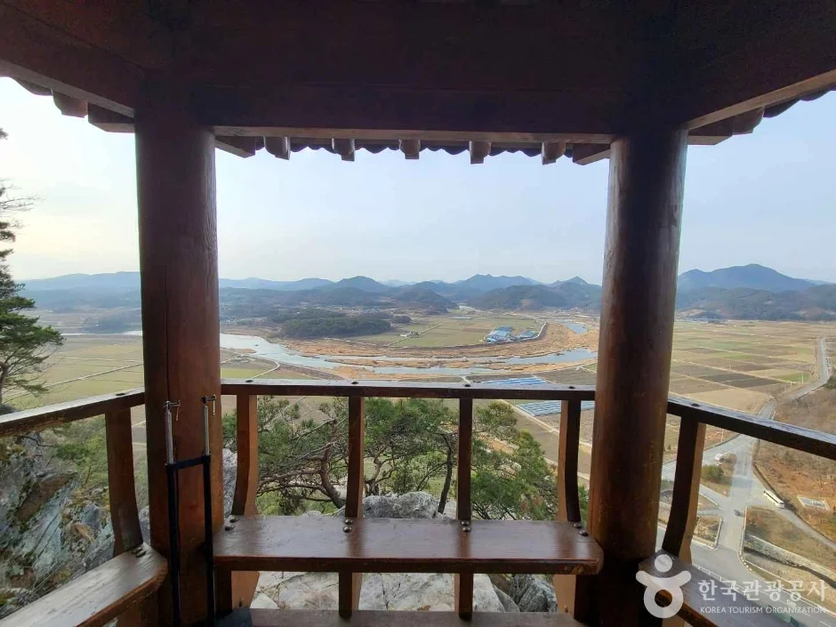
▲ 정자에서 내려다본 적성면 들판 방향의 전망. 촬영 시기는 자료에 없다. ⓒ 한국관광공사 · 공공누리 제3유형(변경금지)
동절기 17시 마감은 그 시각까지 머물 수 있다는 뜻이 아니라 그 안에 다리를 건너고 내려와야 한다는 뜻에 가깝다. 계단과 산길 구간이 있어 다리 건너기와 오르내림에 시간이 걸린다. 공식 소요시간은 없으니, 오후 이른 시간에 입구에 닿도록 계획하자.
3. 바람·결빙 — 공식 자료가 알려주는 것과 알려주지 않는 것
무주탑 현수교는 중간 기둥 없이 바람을 그대로 받는 구조라, 강풍 때 통제 가능성이 높다. 순창군 페이지는 "기상 상황(강설, 강풍, 강우, 태풍 등)에 따라 운영시간은 변경될 수 있습니다"라고만 쓰고, 몇 m/s에서 막는지는 밝히지 않는다. 일부 글에 나오는 강풍 통제 풍속이나 설계 풍속은 순창군 공식 자료에서 확인하지 못해 이 글에 쓰지 않았다.
| 상황 | 공식 확인 | 해야 할 일 |
|---|---|---|
| 강풍·강설·강우 | 운영시간 변경 가능이라고만 안내 | 출발 전 063-650-1642 전화 확인 |
| 풍속 기준 | 숫자 기준 확인하지 못함 | 수치를 단정하지 말고 당일 안내 우선 |
| 노면 결빙 | 다리·계단 결빙 대응 공지 확인하지 못함 | 눈·한파 직후엔 방문 보류 고려 |
| 계단·산길 | 거동이 불편하면 이용이 어려울 수 있다고 안내 | 미끄럼 방지 신발, 장갑·모자 준비 |
공식 자료에 없는 부분은 현장 판단이 필요하다. 바람이 거센 날이라면 다리 위는 평지보다 춥고 흔들림이 크게 느껴질 수 있으니 무리하지 않는 편이 안전하다. 어린이와 함께라면 손을 놓지 말고, 난간 밖으로 몸을 내밀지 말자.
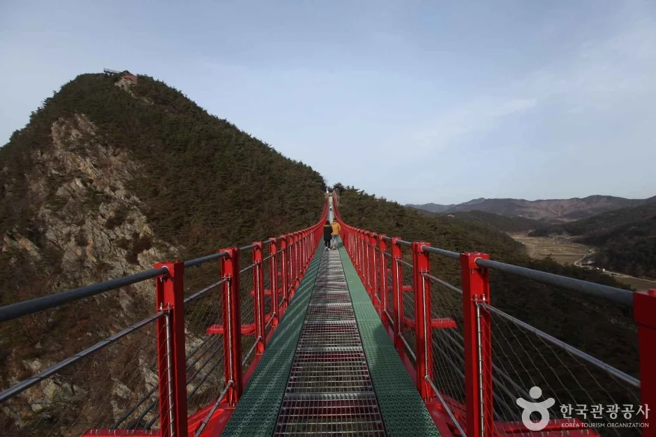
▲ 다리 바닥 위에서 본 맞은편 봉우리. 촬영 시기는 자료에 없다. ⓒ 한국관광공사 · 공공누리 제3유형(변경금지)
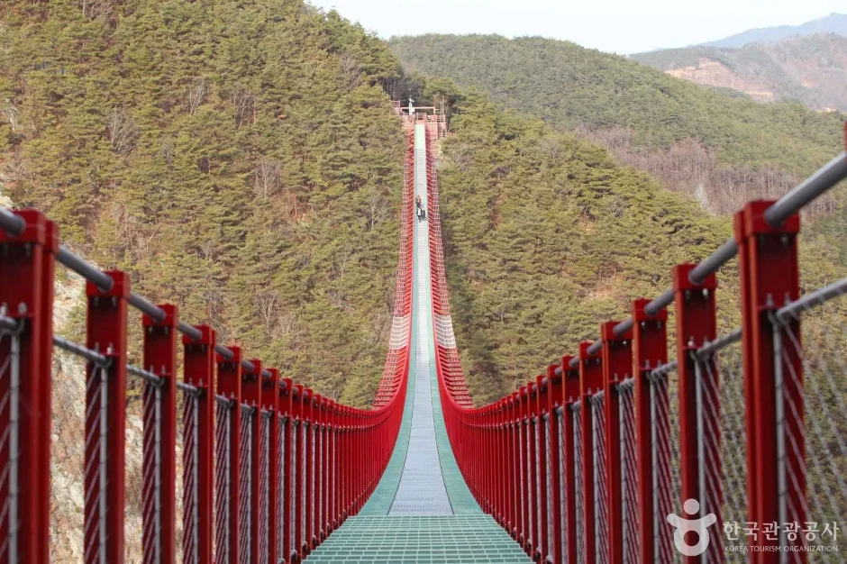
▲ 다리 중앙부로 이어지는 바닥. 촬영 시기는 자료에 없다. ⓒ 한국관광공사 · 공공누리 제3유형(변경금지)
4. 주차와 길 — 내비 입력, 계단, 소요시간
순창군 관광 페이지는 출렁다리 주소를 괴정리 1613번지로, 한국관광공사 정보는 적성면 비홍로 68로 적는다. 주차장은 순창군 페이지 기준 제2주차장(괴정리 1612), 제1주차장(괴정리 1607), 대형주차장(괴정리 598) 세 곳이 나오고, 페이지에 표기된 거리는 각각 약 0.07km, 0.18km, 0.55km다. 요금·주차 대수·운영 여부는 확인하지 못했다. 한국관광공사 정보에는 주차 가능으로만 되어 있다.
| 항목 | 확인한 내용 | 미확인 |
|---|---|---|
| 제2주차장 | 괴정리 1612, 페이지 표기 약 0.07km | 요금·면수 |
| 제1주차장 | 괴정리 1607, 페이지 표기 약 0.18km | 요금·면수 |
| 대형주차장 | 괴정리 598, 페이지 표기 약 0.55km | 요금·면수 |
| 탐방로 | 계단과 등산로로 구성 | 공식 소요시간·거리 |
| 데크 폭 | 순창군은 폭 1.5m라고 설명(2021년 보도) | 혼잡 시 통행 제한 |
걷는 시간은 공식 수치가 없다. 순창군 페이지는 한옥 정자와 어드벤처 전망대에서 섬진강과 적성면 들녘을 볼 수 있다고 소개한다. 2021년 보도에 따르면 적성 채계산 쪽은 산책로가 2개 노선, 동계 채계산 쪽은 1개 노선이다.
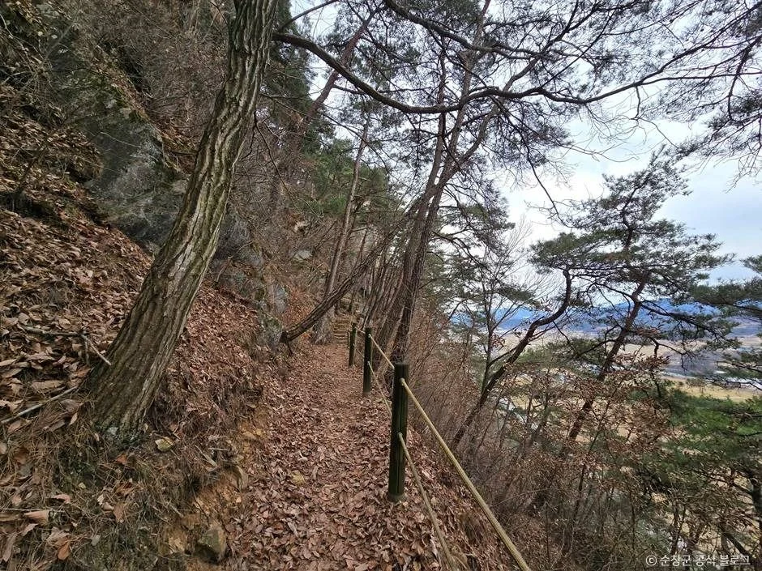
▲ 채계산 산길과 비탈. 촬영 시기는 자료에 없다. ⓒ 한국관광공사 · 공공누리 제3유형(변경금지)
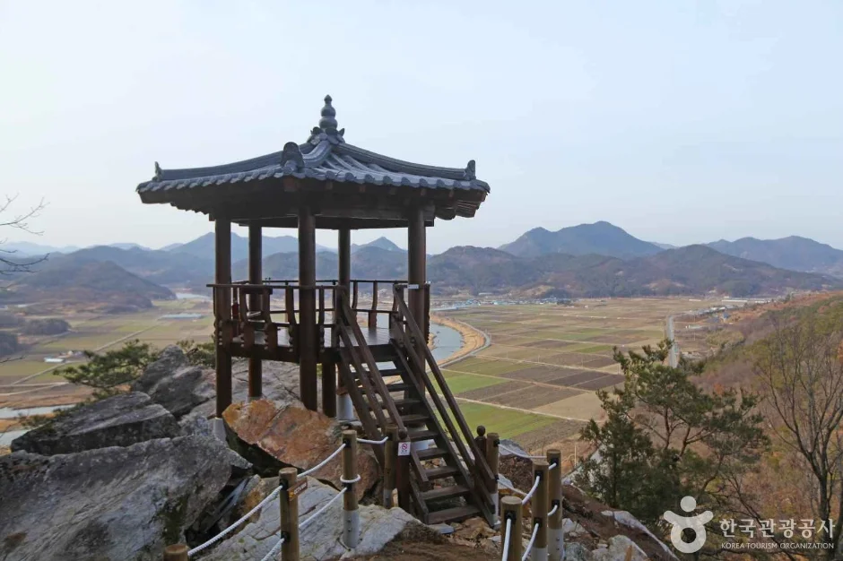
▲ 바위 위에 세워진 정자. 촬영 시기는 자료에 없다. ⓒ 한국관광공사 · 공공누리 제3유형(변경금지)
5. 인근 연계 — 섬진강 마실길과 향가유원지
한국관광공사는 순창 적성면의 섬진강 예향천리마실길을 전체 길이 약 20km의 평탄한 길로 소개한다. 용궐산과 벌동산 사이로 섬진강을 끼고 도는 코스로, 정자 어은정·요강바위·장군목·섬진강을 가로지르는 현수교가 있다고 한다. 상시 개방이고 반려견 동반 산책이 가능하다고 적혀 있다. 다만 안내 연락처는 인계면복지회관(063-650-1612)이고, 채계산 주차장에서 마실길까지의 거리나 이동 시간은 확인하지 못했다.
풍산면 향가유원지는 순창군 문화관광 홈페이지를 출처로 강변 약 2km 백사장, 일제강점기 철도 교각을 활용한 자전거길과 특수강화유리 스카이워크 구간이 있는 곳으로 소개된다. 상시 개방, 연중무휴다. 채계산과 같은 일정에 넣을 수 있는지는 공식 이동 시간이 없어 판단하지 않았다.
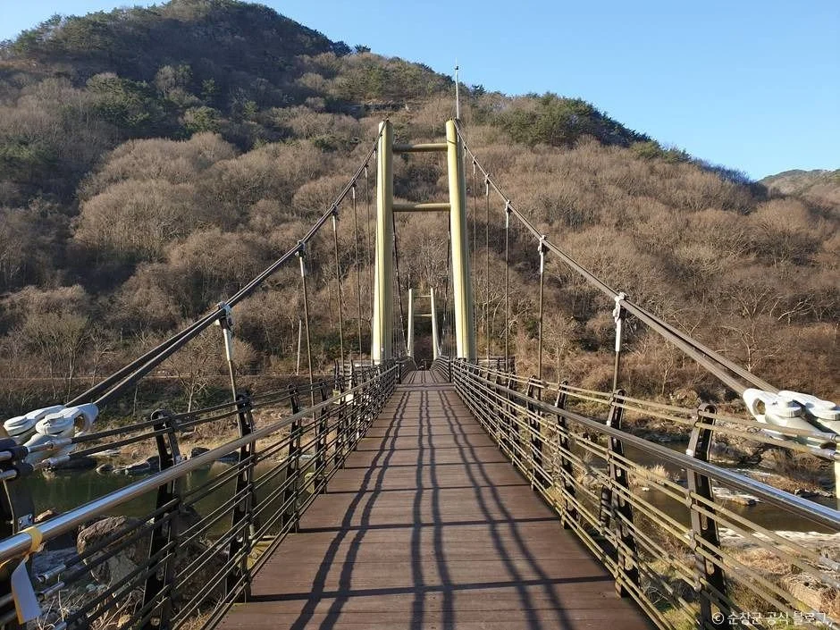
▲ 인근 예향천리마실길 사진으로 올라온 섬진강 위 보행 현수교(채계산 출렁다리 아님). 촬영 시기는 자료에 없다. ⓒ 한국관광공사 · 공공누리 제3유형(변경금지)
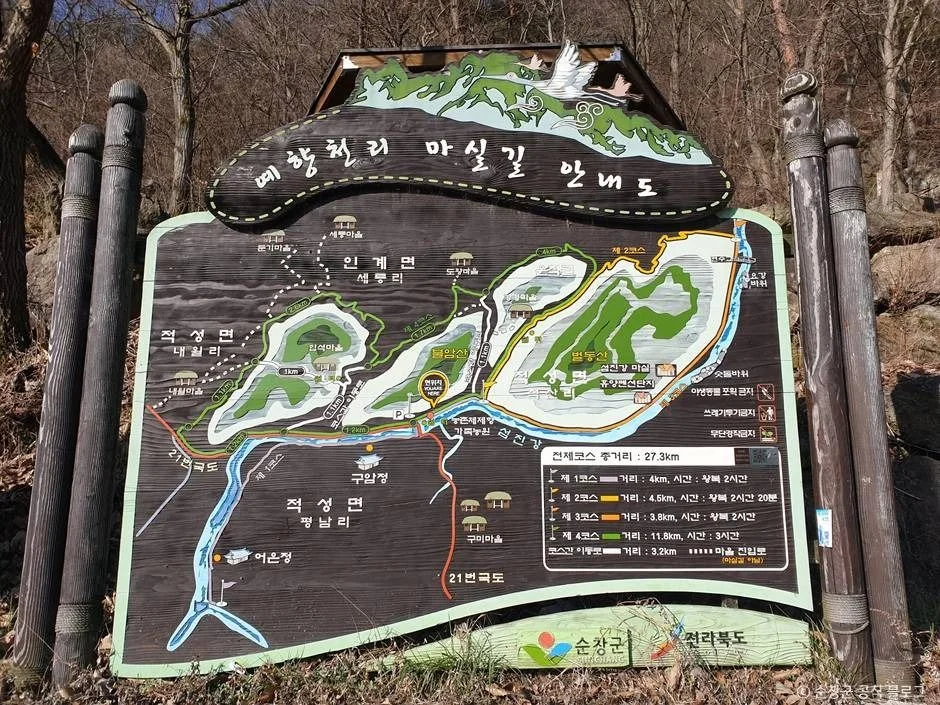
▲ 인근 예향천리 마실길 안내도. 안내판의 세부 구간은 읽히지 않는다. ⓒ 한국관광공사 · 공공누리 제3유형(변경금지)
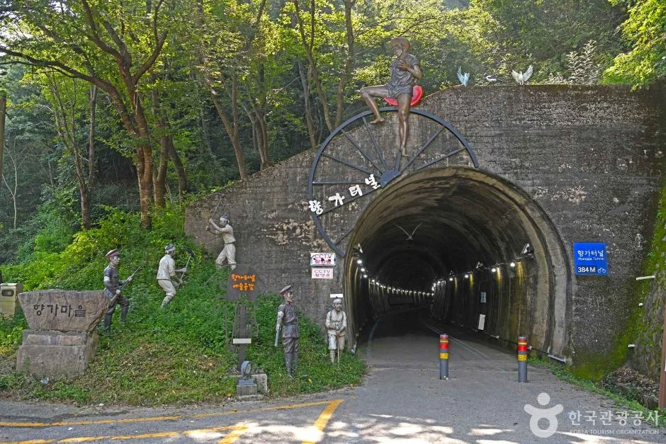
▲ 인근 풍산면 향가유원지 일대의 향가터널 입구. 촬영 시기는 자료에 없다. ⓒ 한국관광공사 · 공공누리 제3유형(변경금지)
같은 순창의 강천산군립공원은 순창 강천산 가을 단풍 기사에, 다른 지역 출렁다리는 청양 천장호 출렁다리 기사와 논산 탑정호 출렁다리 기사에 있다. 남원 방향은 남원 광한루·뱀사골 가을 기사를 참고하자.
6. 겨울 일정 짜기 — 17시 마감 기준
동절기 17시 마감을 기준으로 거꾸로 짠 예시다. 소요시간은 공식 수치가 없어 시각만 제안한다.
| 시각 | 할 일 | 체크 |
|---|---|---|
| 출발 전 | 063-650-1642로 운영 여부 확인, 기상 예보 확인 | 강설·강풍 땐 변경 가능 |
| 09:00~12:00 | 출렁다리와 정자·전망대 | 오전이 여유로움 |
| 점심 이후 | 섬진강 예향천리마실길 또는 향가유원지 | 상시 개방 구간 |
| 17:00 전 | 다리 이용 마무리 | 마감 후 이용 불가로 가정 |
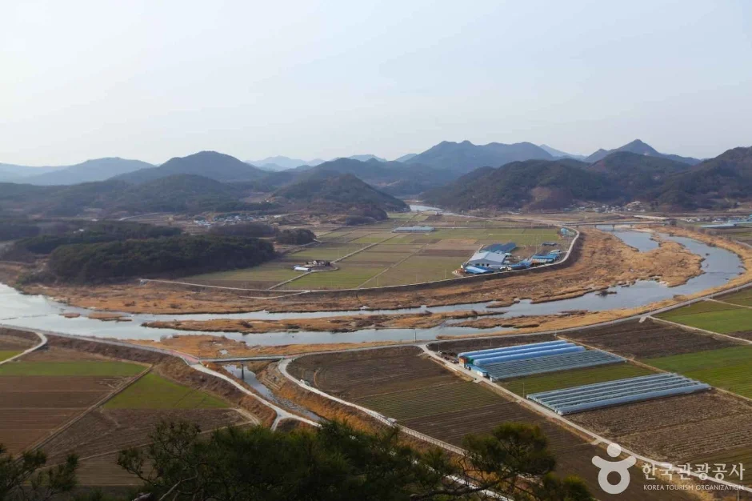
▲ 전망대에서 내려다본 들판과 도로. 촬영 시기는 자료에 없다. ⓒ 한국관광공사 · 공공누리 제3유형(변경금지)
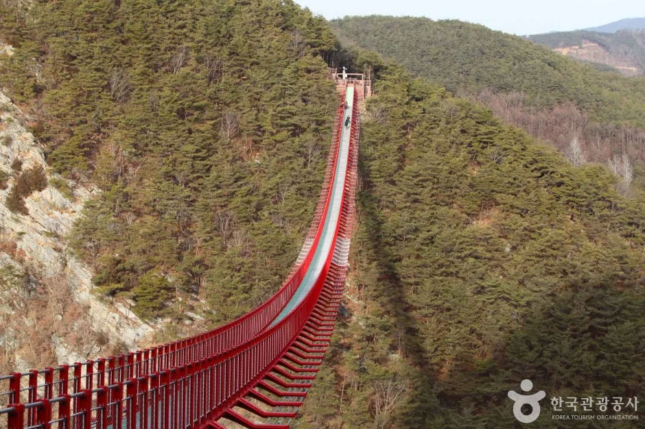
▲ 소나무 산비탈 위로 길게 이어진 다리. 촬영 시기는 자료에 없다. ⓒ 한국관광공사 · 공공누리 제3유형(변경금지)
✅ 출발 전 체크
1) 11월부터는 09:00~17:00(순창군 안내) 2) 강풍·강설 시 운영시간 변경 가능, 풍속 기준은 공식 확인 못함 3) 이용요금 무료, 연중무휴 4) 주차장 요금·소요시간은 공식 확인 못함 5) 문의 063-650-1642
7. 정리
채계산 출렁다리는 순창군 안내 기준 무료이고 3~10월 09:00~18:00, 11~2월 09:00~17:00이며, 기상 상황에 따라 운영시간이 바뀔 수 있다. 길이 270m, 높이 최고 75~90m는 한국관광공사 소개문 값이다.
강풍 통제 풍속, 결빙 대응, 주차 요금, 공식 소요시간은 확인하지 못했다. 방문 전에 순창군(063-650-1642)에 운영 여부를 물어보고, 인근 마실길과 향가유원지는 이동 시간을 지도 앱으로 따로 확인하자. 이 기사는 2026년 10월 19일 기준이다.